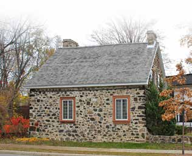

Traditional French and Québécois house La maison traditionnelle française et québécoise

© Ville de Saint-Lambert / Patri-Arch (G. Mongrain, M. Dubois), Répertoire des courants architecturaux, fiche 1

© Ville de Saint-Lambert / Patri-Arch (G. Mongrain, M. Dubois), Répertoire des courants architecturaux, fiche 1
The oldest houses in town: low stone farmhouses under a steep gable, later "quebecised" with a flared eave, more windows, a symmetrical front and a gallery. Almost nothing decorates them beyond a painted wooden surround, and the fiche wants it kept that way.
The French-regime rural house of the seigneurie of La Prairie de la Magdeleine (the riverside strip known as Mouillepied), and its 19th-century synthesis with English neoclassicism, the maison traditionnelle québécoise, which "domine le paysage bâti … de 1830 à 1880 environ". Houses built under the French regime were often altered later to take on the Québécois traits.
| Tenure / plan | single-family |
|---|---|
| Storeys | 1.5 |
| Roof form | gabled |
| Roof pitch | – |
| Window proportion | vertical |
| Principal cladding | stone, roughcast, wood |
| Roofing | see materials |
| Garage | none |
| Lot width | – |
| Front setback | – |
| Side setback | – |
| Front yard green | – |
What Répertoire des courants architecturaux says about this type
- The oldest current in Saint-Lambert; the French-tradition model covers the 18th and early 19th century (1700–1830), the Québécois synthesis about 1830–1880.
- Former farmhouses that once lined the St. Lawrence.
- Rectangular body of one and a half storeys, little raised above the ground.
- Two-slope roof, straight or with a curved base, fairly steep.
- Full-length wood gallery on the main façade, sheltered by the roof's eave (larmier); massive stone chimneys at the roof ends.
- Corps de bâtiment rectangulaire d'un étage et demi peu exhaussé du sol. Toit à deux versants droits ou à base recourbée présentant une pente assez forte.
- La galerie, s'étendant sur toute la longueur de la façade principale et protégée par le larmier du toit, est construite en bois. … Des cheminées massives en pierre sont présentes aux extrémités du toit.
- Ornament is spare; often the only decorative element is a wooden surround (chambranle) around the openings, painted in a colour contrasting with the walls.
- British influence shows in the curved roof extension, more openings, rigorous symmetry, the front gallery and classical decorative touches.
- L'ornementation est plutôt dépouillée. Bien souvent, le seul élément décoratif présent est un chambranle en bois autour des ouvertures.
- Traditional wood doors with glazing.
- Two-leaf wood casements with 12 to 24 small panes or 6 large panes.
- Small gabled dormers.
- Portes en bois traditionnelles avec vitrage.
- Fenêtres à deux battants en bois munies de 12 à 24 petits carreaux ou de 6 grands carreaux.
- Lucarnes à pignon de petites dimensions.
- Stone walls (French tradition); roughcast or wood.
- Roof: traditional sheet metal (à baguettes, à la canadienne, pincée) or cedar shingle.
- Pour les murs extérieurs en pierre, aucun matériau d'imitation n'est acceptable. … Pour la toiture, la tôle traditionnelle (à baguettes, à la canadienne ou pincée) et le bardeau de cèdre sont à privilégier.
- No imitation stone; do not paint masonry; replace roughcast or wood with identical material; industrial materials (aluminium, vinyl, wood composite, fibre cement) proscribed.
- Asphalt shingle, industrial-looking sheet metal and synthetics proscribed on the roof.
- Do not remove or narrow the gallery; railings in painted wood of traditional make, not metal or prefab-look treated wood.
- Steel or PVC doors unsuitable; avoid guillotine, sliding, single-leaf crank, undivided, aluminium or PVC windows (a wood crank window imitating the large-pane casement is acceptable); do not add dormers to a roof that has none.
- Do not raise foundations or change roof pitch; enlarge at the side or rear, reduced in volume, same roof form, set back from the front; never in front or flush with the main façade.
- Do not overload with decorative elements.
Same word elsewhere
- Stone house of the French tradition (Baie-D'Urfé)
- Rural house of French inspiration (Charlesbourg (Trait-Carré))
- Québec house of neoclassical inspiration (Charlesbourg (Trait-Carré))
- Mansard house (Charlesbourg (Trait-Carré))
- Cubic house (Four Square) (Charlesbourg (Trait-Carré))
- Industrial vernacular house (Charlesbourg (Trait-Carré))
- Central-gable house (maison à pignon central) (Gatineau)
- Complex gabled-roof house (maison à toit complexe à pignon) (Gatineau)
- Mansard-roofed house with gable wall on the façade (maison à toit mansardé avec mur pignon en façade) (Gatineau)
- One-and-a-half-storey wooden matchstick house (maison allumette en bois d'un étage et demi) (Gatineau)
- Wood matchstick house of two to two and a half storeys (maison allumette en bois de deux à deux étages et demi) (Gatineau)
- Brick matchbox house, two to two and a half storeys (maison allumette en brique de deux à deux étages et demi) (Gatineau)
- Cubic house (maison cubique) (Gatineau)
- CIP executive's house (maison de cadre de la CIP) (Gatineau)
- Flat-roofed wood house (maison en bois à toit plat) (Gatineau)
- Flat-roofed brick house (maison en brique à toit plat) (Gatineau)
- L-plan house with a two-slope (gable) roof (maison avec plan en L à toit à deux versants) (Gatineau)
- English-revival stone house (Hampstead)
- Postwar detached house (Hampstead)
- House of French inspiration (Île d'Orléans)
- Traditional Québec house of neoclassical influence (Île d'Orléans)
- Second Empire style and the mansard house (Île d'Orléans)
- Boomtown house (Île d'Orléans)
- Cubic house (Four Square) (Île d'Orléans)
- Stone house of the French tradition (Lachine (borough of Montréal))
- Bourgeois brick house in the Victorian taste (Lachine (borough of Montréal))
- The maison « Gameroff » — contractor-built house of the 1950s–1970s quarters (Lachine (borough of Montréal))
- Franco-Québécois transitional house (Lévis)
- Québécois traditional house (Lévis)
- Neoclassical house (Lévis)
- Second Empire house (Lévis)
- Victorian house (Lévis)
- American vernacular house (Lévis)
- Beaux-Arts house (Lévis)
- Boomtown house (Lévis)
- Flat-roofed house (Lévis)
- Village house of Longue-Pointe (Mercier–Hochelaga-Maisonneuve (borough of Montréal))
- Company workers' house of the Hudon mill, rue Saint-Germain (Mercier–Hochelaga-Maisonneuve (borough of Montréal))
- Veterans' house, to the Wartime Housing Limited model (Mercier–Hochelaga-Maisonneuve (borough of Montréal))
- Garden City House (Town of Mount Royal)
- Faubourg House (Town of Mount Royal)
- Canadian House (Town of Mount Royal)
- New England House (Town of Mount Royal)
- Georgian House (Town of Mount Royal)
- English Manor House (Town of Mount Royal)
- Bungalow (Town of Mount Royal)
- Cottage (Town of Mount Royal)
- Split-Level (Town of Mount Royal)
- Prairie House (Town of Mount Royal)
- Semi-detached single-family house (Outremont (borough of Montréal))
- Detached single-family house (Outremont (borough of Montréal))
- Modern house on the flank (Outremont (borough of Montréal))
- Faubourg house (Le Plateau-Mont-Royal (borough of Montréal))
- Detached urban house (Le Plateau-Mont-Royal (borough of Montréal))
- Row urban house (Le Plateau-Mont-Royal (borough of Montréal))
- Stone house of the French tradition (Pointe-Claire)
- Traditional Québec house of the village core (Pointe-Claire)
- Veterans' house on the Wartime Housing Limited model, c. 1947 (Pointe-Claire)
- One-storey rural house of French inspiration (Québec City)
- Urban stone house of French inspiration (Québec City)
- Franco-Québécois transition house (Québec City)
- London-type terrace house (Québec City)
- Québécois neoclassical house (Québec City)
- Mansard-roofed house (Québec City)
- Rudimentary faubourg house (Québec City)
- Cubic house (Four Square) (Québec City)
- Flat-roofed faubourg house (Québec City)
- Neo-Queen Anne house (Québec City)
- Neo-Tudor house (Québec City)
- Arts and Crafts house (Québec City)
- Dutch Colonial Revival house (Québec City)
- Neo-Georgian house (Québec City)
- Maison shoebox (Rosemont–La Petite-Patrie (borough of Montréal))
- Detached house of the Cité-Jardin du Tricentenaire (Rosemont–La Petite-Patrie (borough of Montréal))
- Mansard-roofed house of Second Empire influence (Saint-Lambert)
- Queen Anne style house (Saint-Lambert)
- Boomtown house with false mansard (Saint-Lambert)
- Boomtown house with crown (parapet or cornice) (Saint-Lambert)
- Cubic (Four Square) house (Saint-Lambert)
- House of Arts and Crafts influence (Saint-Lambert)
- The modern house (including the bungalow) (Saint-Lambert)
- Two-storey clapboard village house of the îlot villageois (Sainte-Anne-de-Bellevue)
- Traditional Québec house of the village core (Sainte-Anne-de-Bellevue)
- Garden City Press workers' house (Sainte-Anne-de-Bellevue)
- Village house (Le Sud-Ouest (Montréal))
- Boomtown house (Le Sud-Ouest (Montréal))
- Urban house (Le Sud-Ouest (Montréal))
- Apartment house (Le Sud-Ouest (Montréal))
- Town house (post-1960 project housing) (Le Sud-Ouest (Montréal))
- Veterans' house (Le Sud-Ouest (Montréal))
- Lower-town company house (Ross and Macdonald, 1918–1923) (Témiscaming)
- Upper-district company house (Somerville, 1925–1950) (Témiscaming)
- Stone house in the French tradition (Vieux-Terrebonne)
- Maison cossue of rue Saint-Louis (Vieux-Terrebonne)
- Neoclassical Québécois stone house (Vieux-Terrebonne)
- Small-gabarit vernacular village house of the Bas-de-la-Côte (Vieux-Terrebonne)
- French-regime house in stone (colonial français) (Trois-Rivières)
- Well-to-do bourgeois house in stone and brick (maison cossue) (Trois-Rivières)
- Boomtown house (Trois-Rivières)
- Cubic house (Four-square) (Trois-Rivières)
- Arts & Crafts house (Trois-Rivières)
- French-regime stone house (Ville-Marie (Montréal))
- Classical house of the British regime (Ville-Marie (Montréal))
- Greystone terrace (Ville-Marie (Montréal))
- Workers' house with carriage gate (Ville-Marie (Montréal))
- Rural or village house (Villeray–Saint-Michel–Parc-Extension)
- Boomtown house (Villeray–Saint-Michel–Parc-Extension)
- Post-war house (Villeray–Saint-Michel–Parc-Extension)
- Post-war semi-detached house (Villeray–Saint-Michel–Parc-Extension)
- Picturesque villa and country house (Westmount)
- Greystone row house (Westmount)
- Mansard-roofed house of Second Empire influence (Westmount)
- Queen Anne house (Westmount)
- Richardsonian Romanesque house (Westmount)
- Semi-detached brick house (Westmount)
- Eclectic prestige house of the summit (Westmount)
- Tudor Revival house (Westmount)
- Arts and Crafts semi-detached house (Westmount)
- Interwar apartment house (Westmount)
Same form elsewhere
- Québec house of neoclassical inspiration (Charlesbourg (Trait-Carré))
- Traditional Québec house of neoclassical influence (Île d'Orléans)
- Québécois traditional house (Lévis)
- Traditional Québec house of the village core (Pointe-Claire)
- Québécois neoclassical house (Québec City)
- Traditional Québec house of the village core (Sainte-Anne-de-Bellevue)
- Neoclassical Québécois stone house (Vieux-Terrebonne)
Same period elsewhere
- Stone house of the French tradition (Baie-D'Urfé)
- Rural house of French inspiration (Charlesbourg (Trait-Carré))
- Québec house of neoclassical inspiration (Charlesbourg (Trait-Carré))
- House of French inspiration (Île d'Orléans)
- Traditional Québec house of neoclassical influence (Île d'Orléans)
- Regency cottage (Île d'Orléans)
- Second Empire style and the mansard house (Île d'Orléans)
- Victorian eclecticism (Île d'Orléans)
- Stone house of the French tradition (Lachine (borough of Montréal))
- French-regime house (Régime français) (Lévis)
- Franco-Québécois transitional house (Lévis)
- Québécois traditional house (Lévis)
- Regency cottage (Lévis)
- Neo-Gothic (Lévis)
- Neoclassical house (Lévis)
- Agricultural vernacular building (Lévis)
- Village house of Longue-Pointe (Mercier–Hochelaga-Maisonneuve (borough of Montréal))
- Stone house of the French tradition (Pointe-Claire)
- Traditional Québec house of the village core (Pointe-Claire)
- One-storey rural house of French inspiration (Québec City)
- Urban stone house of French inspiration (Québec City)
- Franco-Québécois transition house (Québec City)
- London-type terrace house (Québec City)
- Palladian house (residential Palladian) (Québec City)
- Neo-Gothic house, villa or cottage (Québec City)
- Québécois neoclassical house (Québec City)
- Regency cottage (Québec City)
- Regency villa (Québec City)
- Mansard-roofed house (Québec City)
- Rudimentary faubourg house (Québec City)
- Traditional Québec house of the village core (Sainte-Anne-de-Bellevue)
- Village house (Le Sud-Ouest (Montréal))
- Stone house in the French tradition (Vieux-Terrebonne)
- Maison cossue of rue Saint-Louis (Vieux-Terrebonne)
- Neoclassical Québécois stone house (Vieux-Terrebonne)
- Small-gabarit vernacular village house of the Bas-de-la-Côte (Vieux-Terrebonne)
- French-regime house in stone (colonial français) (Trois-Rivières)
- French-regime stone house (Ville-Marie (Montréal))
- Classical house of the British regime (Ville-Marie (Montréal))
- Maison-magasin and warehouse with dwellings above (Ville-Marie (Montréal))
- Workers' house with carriage gate (Ville-Marie (Montréal))
- Rural or village house (Villeray–Saint-Michel–Parc-Extension)
Same style elsewhere
- Stone house of the French tradition (Baie-D'Urfé)
- Rural house of French inspiration (Charlesbourg (Trait-Carré))
- Québec house of neoclassical inspiration (Charlesbourg (Trait-Carré))
- Central-gable house (maison à pignon central) (Gatineau)
- House of French inspiration (Île d'Orléans)
- Traditional Québec house of neoclassical influence (Île d'Orléans)
- Stone house of the French tradition (Lachine (borough of Montréal))
- French-regime house (Régime français) (Lévis)
- Franco-Québécois transitional house (Lévis)
- Québécois traditional house (Lévis)
- Neoclassical house (Lévis)
- Village house of Longue-Pointe (Mercier–Hochelaga-Maisonneuve (borough of Montréal))
- Stone house of the French tradition (Pointe-Claire)
- Traditional Québec house of the village core (Pointe-Claire)
- One-storey rural house of French inspiration (Québec City)
- Urban stone house of French inspiration (Québec City)
- Franco-Québécois transition house (Québec City)
- London-type terrace house (Québec City)
- Québécois neoclassical house (Québec City)
- Rudimentary faubourg house (Québec City)
- Traditional Québec house of the village core (Sainte-Anne-de-Bellevue)
- Stone house in the French tradition (Vieux-Terrebonne)
- Neoclassical Québécois stone house (Vieux-Terrebonne)
- French-regime house in stone (colonial français) (Trois-Rivières)
- Well-to-do bourgeois house in stone and brick (maison cossue) (Trois-Rivières)
- French-regime stone house (Ville-Marie (Montréal))
- Classical house of the British regime (Ville-Marie (Montréal))